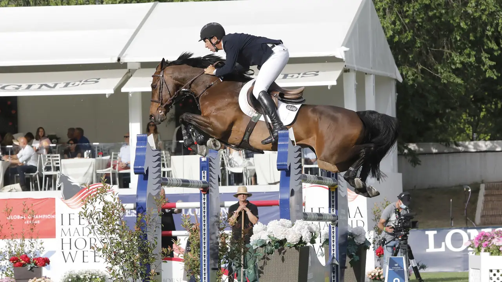

CSIO5* de Roma: Alberto Marquez Galobardes y Armando Trapote defienden a España
Roma (Italia) celebra un CSIO5* del 27 de mayo al 31 de mayo. Repasamos quién está inscrito y la representación española, según la lista oficial de la FEI.

Uso editorial
El concurso
Roma (Italia) acoge un CSIO5* del 27 de mayo al 31 de mayo. La lista de inscritos reúne a 76 jinetes y 183 caballos de 14 naciones.
Representación española
Por España compiten:
- Alberto Marquez Galobardes — KELLY, COOLBOY, FOR JUMP DES HORTS
- Armando Trapote — MATILDA, NASA DE TOXANDRIA, TORNADO VS
Naciones inscritas
| País | Jinetes | Caballos |
|---|---|---|
| Italia | 26 | 59 |
| Bélgica | 4 | 11 |
| Brasil | 4 | 10 |
| Francia | 4 | 9 |
| Alemania | 4 | 11 |
| Reino Unido | 4 | 11 |
| Irlanda | 4 | 12 |
| México | 4 | 10 |
| Suecia | 4 | 9 |
| Estados Unidos | 4 | 11 |
| Australia | 2 | 3 |
| Austria | 2 | 4 |
| Noruega | 2 | 6 |
| España | 2 | 6 |
Lista completa de inscritos (Master List FEI)
— Redacción de Hípica al Día